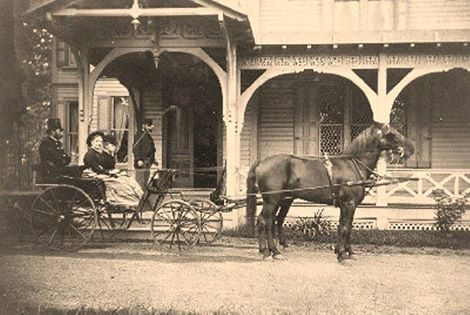
This story begins with the expansion of the Robert Coleman family from their vast land holdings east and west of Cornwall, to the north, occupying a prominent position on "Mount Lebanon." A hub of Lebanon's high society, the site now known as Coleman Memorial Park was home not only for the Colemans but those who served them.
James Coleman Family
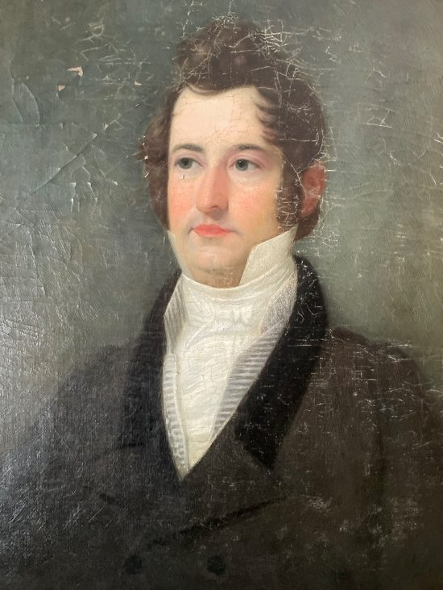
Founder Robert Coleman raised his family at Speedwell and then Elizabeth, retiring in 1809. Leaving his sons in charge, it was James who continued operating the Elizabeth furnace while three others, William, Edward and Thomas managed the other Coleman iron enterprises.
James and his wife Harriett Dawson raised five children at Elizabeth. After his death in 1831, his brothers served as guardians over their young two sons, Robert and George Dawson Coleman, managing affairs for them until the time of their majority.
The Elizabeth furnace operated until 1856, reportedly going out of blast "for lack of wood." In September of that year George liquidated many of his capital assets from the furnace in a public sale.
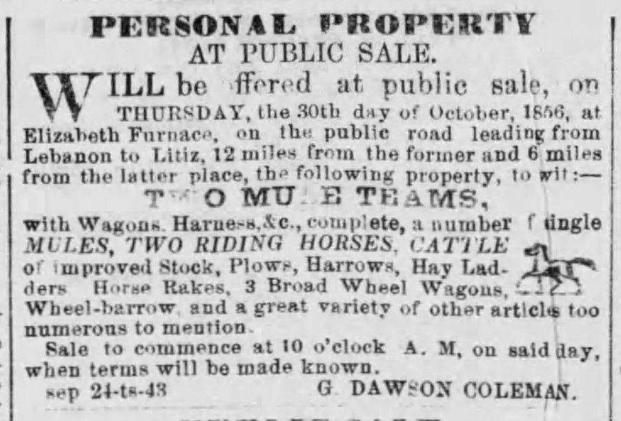
More to the point, the old, cold-blast charcoal furnace was no longer competitive with emerging technology, necessitating its final closure.
Anthracite furnaces and hot blast furnaces had been developing in the 1840s. Such furnaces had been constructed in Ashland Maryland by Artemas Wilhelm and his father. He then came to assist R. W. Coleman with Cornwall's Anthracite furnace in 1849.
But according to Grittinger's history of Lebanon's iron industries, the first anthracite blast furnaces in the county had already been built by their cousins Robert and George in North Lebanon in 1846 and 1848.
Why North Lebanon?
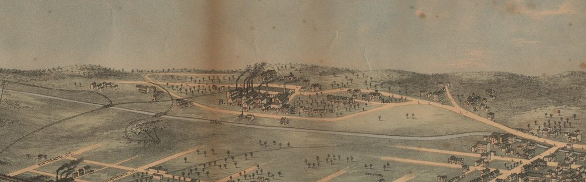
Having come from the woods and eastern hills of Elizabeth furnace at Brickerville, how did they come to North Lebanon and pick that hill as a site for their new venture?
Several reasons suggest themselves: it was closer to the Cornwall ore mines, and easier to transport the ore across the flat terrain of Lebanon valley. Furthermore, the Union Canal, completed in 1828, ran straight through Lebanon within a block of the site they chose. The branch to Pine Grove was finished within two more years. Easy access brought needed coal in and shipped iron out.
Most traces of the canal are gone except for a few "Canal Street" and "Water Street" names, a park, and a few details to be discovered by a more discerning eye. It ran east to west just south of Maple Street.
The "bank furnace" construction required them to excavate the side of a hill. In that decade it was still easier to load the furnace from the top, as with the old furnaces at Cornwall, Elizabeth and elsewhere in the region.
So they chose a site we now recognize as Mt. Lebanon, where the Colemans also built their expansive estates, eventually five mansions in all.
George Dawson Coleman (1825–1878) and Deborah Norris Brown (1832–1894)
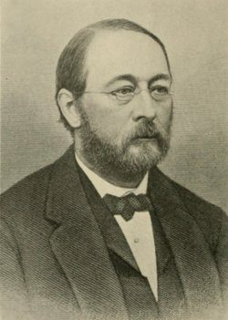
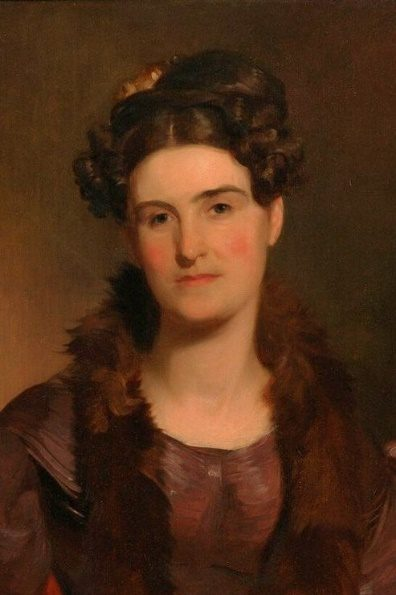
After their initial successes with newer furnace technology, George Dawson Coleman's brother Robert moved abroad to Paris France, having sold his interest to his brother in 1852. While Augustus Boyd managed the Elizabeth furnace, George flourished in Lebanon as "one of the most prominent and progressive iron manufacturers in Pennsylvania, (Grittinger)" making many improvements to his new furnaces.
George died in 1878, the same year that his brother Robert passed away in Paris. His wife Deborah Brown Coleman or "Debbie" continued ownership of the furnaces and reigned as a strong pillar of the community, during the same years as her younger cousin, Cornwall and Lebanon's Robert H. Coleman.
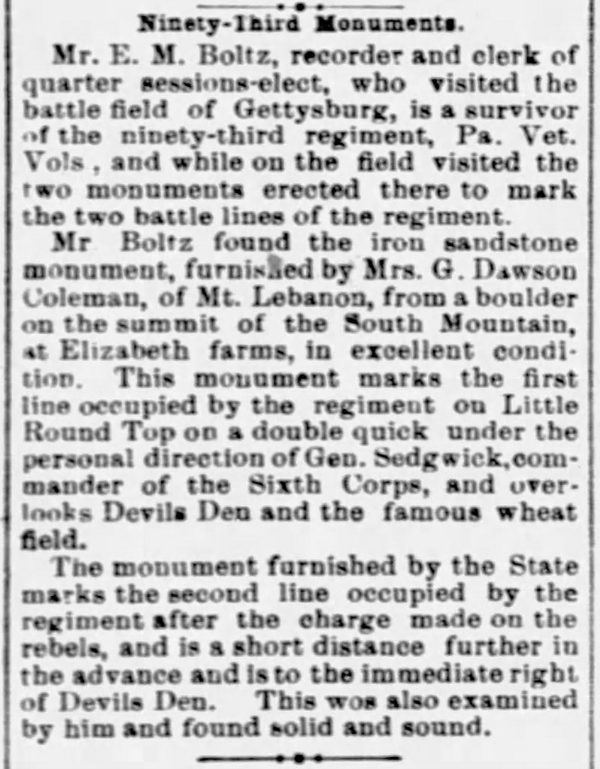
Among her support of churches and other charities in Lebanon, she served on the executive committee of the Ladies Aid Society of Good Samaritan hospital.
On her death in 1894 the newspapers were filled with accolades. She had contributed not just to Lebanon, but to numerous greater works, far more than can be named here, such as the City Parks Commission of Philadelphia and president of Philadelphia's Society of Colonial Dames.
In her will she left $500 to her cook, Bridget Grady for her years of faithful service. Other servants who had lived with her for at least five years received $200 each.
She not only left the properties in Mt. Lebanon and Brickerville, but also a mansion in Philadelphia. Her will stated "her earnest request" that the property at the Elizabeth farm remain in the Coleman family forever.
Age 65 at death she had been "a remarkable woman, her charities being very large. Her wealth was large and of it she spent freely for every good purpose."
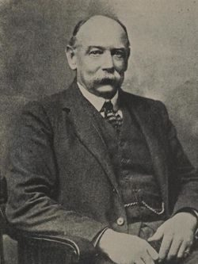
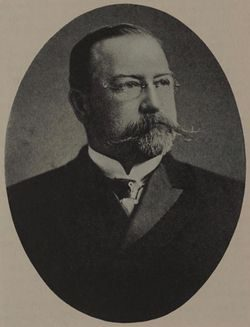
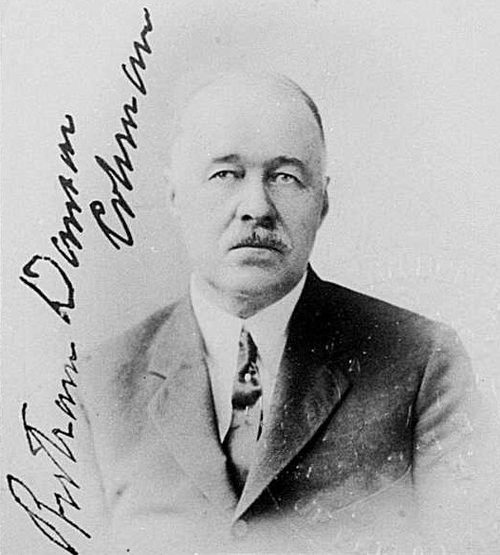
The furnaces were managed by brothers Horace and Arthur Brock, both of whom had married Coleman daughters Deborah and Sarah respectively, in 1878 and 1879.
When Bertram and his brother Edward had come of age the four formed a company in 1889, Coleman & Brock to continue managing the furnaces. In 1901 they sold the furnaces to Pennsylvania Steel.
Many fascinating details of the life of George Dawson Coleman are related in local historian James Polczynski's book "Souls of Iron" (2022).
The Mansions of Mt. Lebanon
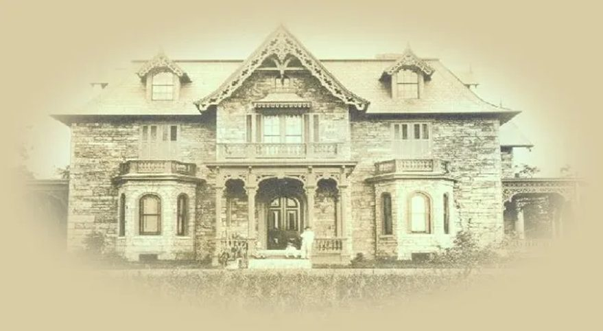
With much already written about Coleman family furnaces, the intention of this story, like other recent stories, is to call attention to the homes and names of families that characterized Lebanon in the latter 19th century.
Their success in the iron business was accompanied by the care the Colemans gave to their workers and the community, providing housing and churches. See additional details in the story involving the loss of their young son James due to a horse-riding accident in 1874.
George built their "Homestead Mansion" after marrying Deborah Brown of Philadelphia in 1852 (the same year brother Robert departed for France). Some three or more decades later four more mansions were built on "Mt. Lebanon" for their married children.
Typical of other wealthy families, these homes served part-time during the year. George's son Bertram Dawson Coleman resided there only during the summer, having many business concerns in Philadelphia and throughout the state.
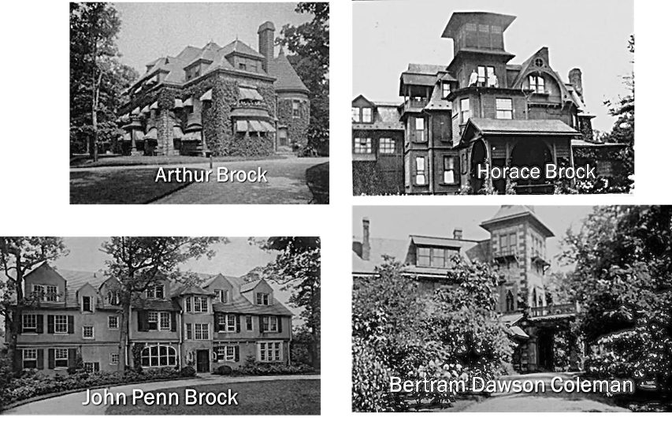
All of the property was deeded to the city in the 1930s and the last of the homes demolished in 1961. The public enjoys the site today as "Coleman Memorial Park."
The Irish Coachman — Patrick Guare (1842–1916)
The 1860 census lists George Dawson Coleman as "iron master," living in North Lebanon with wife "Debbie" and two young children Debbie and Sarah. In their household were five domestics, one born in Ireland, a gardener named John Hagerty.
Ten years later there were seven young Coleman children in all, in addition to six domestics, some of whom were Irish-born, and one named Fanny Brown (coincidentally the same name as their own child Fanny Brown Coleman).
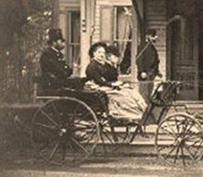
The keeping of Irish immigrants as household servants seems fitting, the original Robert Coleman had come from Castle Finn, Ireland in 1764.
Some of them lived in the Coleman mansion and others in the adjacent houses on Furnace Hill that had been constructed by Coleman for his furnace workers. Not far from the mansion and two doors from the house of furnace manager Charles Forney, was a house occupied by a large Irish family consisting of the Gradys and Guares.
In 1870 Bridget Guare ("retired servant, age 65," her husband Martin long-since passed) lived with her two Irish-born sons Patrick, age 27 a coachman, and James, age 25 a "day laborer" who served many years as a gardener. They shared the house with the family of her daughter Bridget, married to Patrick Grady. The Gradys had six Pennsylvania-born children, making it a very full house.
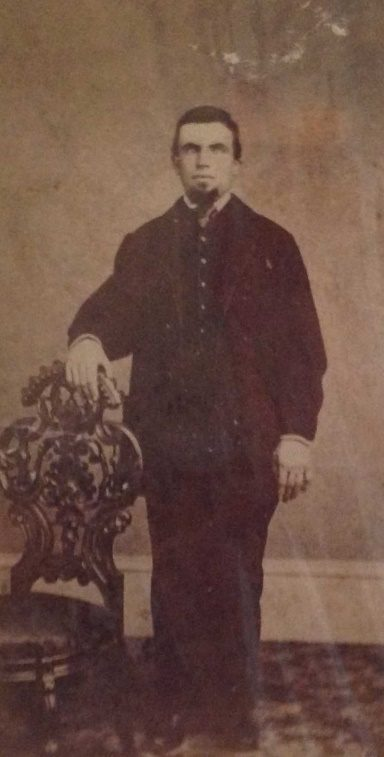
In 1859 Patrick, age 17 was engaged as the Coleman family coachman, a position he would hold for nearly 30 years until 1889.
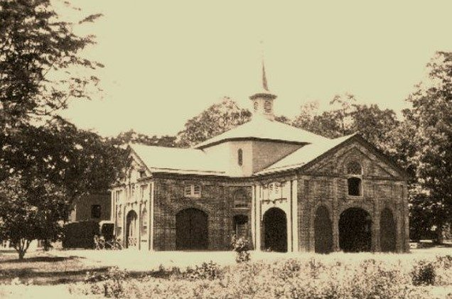
His place of employment would have been the Coleman stables. His service was highly satisfactory, such that the Colemans promised to build him a home, on the condition that he became married.
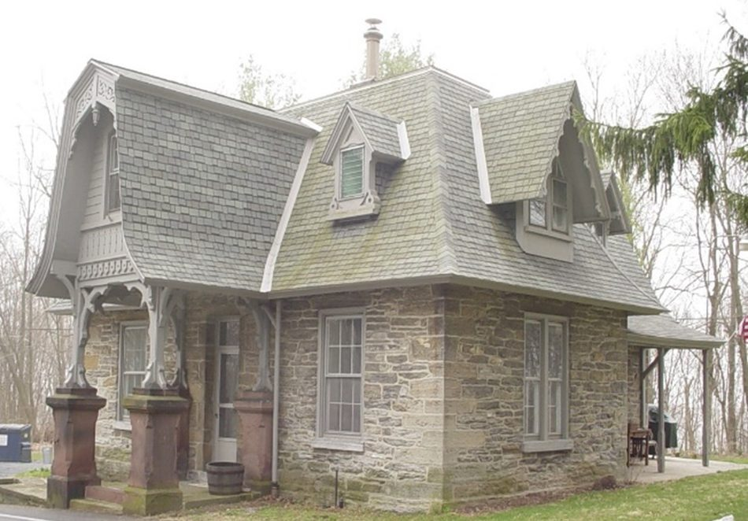
The home has also been referred to as the Furnace Hill Gatehouse, and is one of the few remaining structures in the park today. Situated at the top of Furnace Hill Road at the intersection with Krause Drive, it is referred to informally as the "Exit House" and is rented as a private residence. The stables also remain.
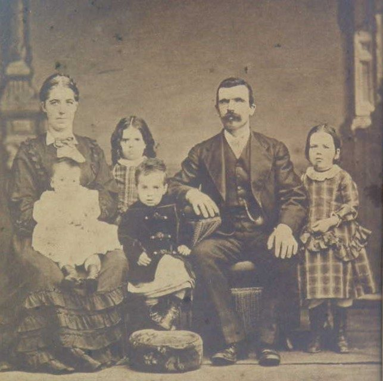
On April 17, 1871 Patrick and Annie Connell (also from Ireland) were married. In all they raised nine children, some of whom would continue in the employ of the Coleman family. They appear in the 1880 census adjacent to the households of "Brock, Horace" and "Coleman, Mrs. G. D."
Patrick's mother Bridget Guare died in April 1880; his sister, Bridget Guare Grady, served as the cook for the Colemans for 40 years, with her husband as a groundskeeper. The families kept close; the Guares intermarried with the Allweins and the Gradys with the Wachters.
In addition to the Colemans and Brocks, Patrick served the President of the United States on several occasions. According to one family anecdote, in April 1873 U. S. Grant arrived in Lebanon to visit with George Dawson Coleman. It very likely was Patrick Guare who drove the carriage from the train station, taking the party back to the Coleman residence.
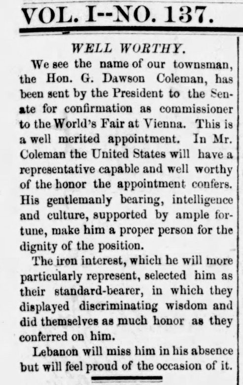
In this particular visit, Grant had just nominated Coleman to represent the country at the 1873 Vienna World's Fair, and arrived from New York to visit for the weekend. Later that month, the entire Coleman family departed for six months on the Continent, representing the United States.
Patrick's Second Career at Pennsylvania Bolt and Nut Company
In September 1889, Arthur and Horace Brock, along with Bertram and Edward Coleman, bought into The Pennsylvania Bolt & Nut Company. Founded in 1882, it had gone through a few different majority owners.
Now in the capable hands of the Colemans and Brocks, "the works rank as the most extensive of their kind in America; it is a source of pleasure to feel that all the stock is now held by Lebanonians (Lebanon Daily News)."
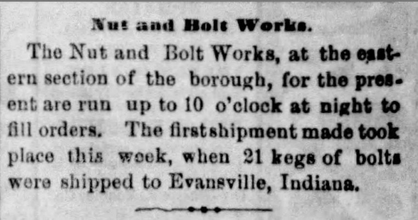
That same year Patrick Guare departed his job as coachman for the Colemans and Brocks and began working at the company.
A few years later (1892), Patrick made news in an on-the-job accident, having dropped a bar of iron on his foot, causing severe injury.
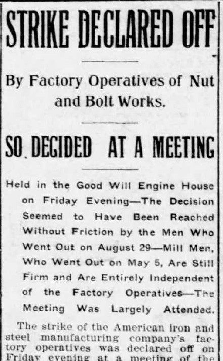
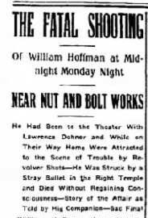
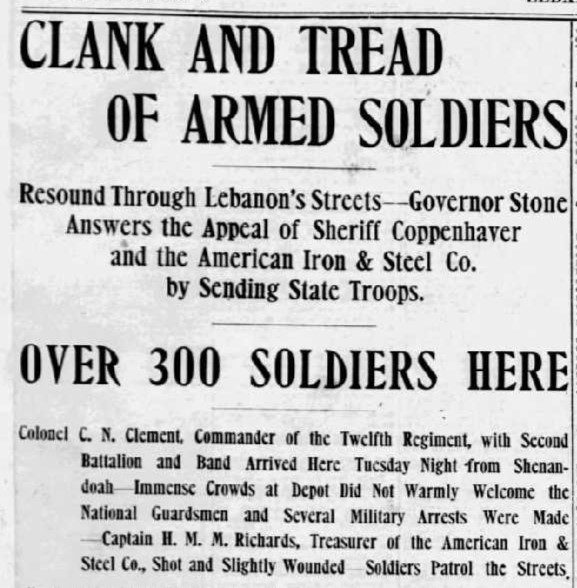
In 1899 the "Nut and Bolt Works" consolidated with four other companies to form the American Iron & Steel Manufacturing Company (and later bought by Bethlehem Steel in 1917). It is not certain, when the company experienced violent labor riots in 1902, whether Patrick was an employee at that time.
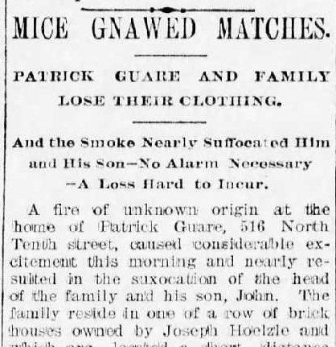
When they left Mt. Lebanon, the family relocated to 516 North 10th Street. A catastrophic fire in their home caused news in 1898. Patrick was rendered unconscious by the smoke, but was rescued and resuscitated by his son John. Much of their clothing was destroyed, but most of the house spared. Oddly, the assumed cause of the fire was attributed to matches in a coat pocket having been gnawed by a mouse.
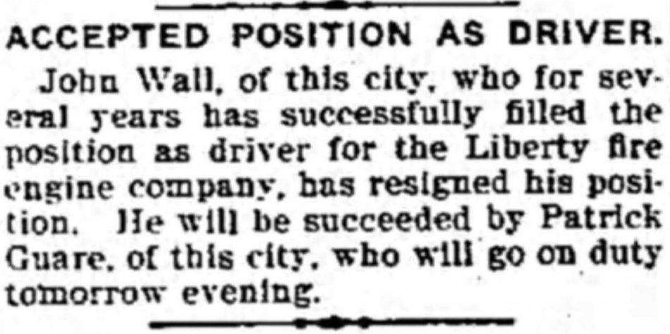
It is possible that his brush with fire led to Patrick returning to his former career, this time driving the engine for the Liberty Fire Company in 1901. Very soon afterwards the unfortunate Patrick Guare was placed out-of-commission by an unspecified injury.
In 1916 Patrick suffered a paralytic stroke and died three weeks later. He was described as "one of the most popular and best-known Irish born residents of Lebanon," and remembered for his service to the Coleman family.
Services were held at St. Mary's Catholic Church and burial in the church cemetery. In honor of his service, a coach from the home of Miss Fannie Coleman (daughter of George Dawson Coleman) was among the carriages in the procession to the cemetery.
James Guare, the Coleman Butler
Among the nine Guare children, James Joseph Guare served as the Coleman's butler.
In February 1899, third ward Constable Geo. A. Hunter became suspicious when he saw a piece of expensive jewelry in a pawn shop, a gold chain worth $16 and pawned for $1. Keeping his eyes on the matter, within a few days he noticed James Guare visiting the shop.
Hunter reported the suspected crime to Edward R. Coleman, who was unaware of any theft and unwilling to believe ill of James, age 23, who had been a trusted servant for the last twelve years. Hunter and several officers were in hiding in Coleman's quarters when James came in to attend to his master. He was confronted with the crime, to which he confessed.
This led to a search of his quarters, where an "immense amount of plunder" was discovered in his bedroom. He had in his possession a duplicate key to the Coleman's safe. He had also broken into a sideboard and taken a quantity of whiskey.
The story made news as far as Philadelphia (part-time home of the Colemans) having robbed the house of clothing, jewelry, silverware and other items amounting to several thousand dollars in value. However the true extent of the loss was probably greater.
Anna Wise of Walnut Street was also arrested for receiving stolen property from James, a nine-pointed star pin with 32 diamonds. She posted $100 bail and was later discharged at her hearing.
It is surprising that so many valuables had not been missed by the Colemans. One paper said Guare's apartment "had the appearance of a well-stocked jewelry store." James was escorted to jail where he was unable to post $800 bail.
The crime was reported as one of the boldest and most extensive robberies in the vicinity for many years. Rumors described James attending various social functions and becoming part of a "fast set of young men and women," requiring him to steal to support his popular lifestyle.
Being his first offense, he was sent to Huntingdon Reformatory for Young Offenders in March 1899. Discharged in November the following year he enlisted as an ordinary seaman in the U. S. Navy.
He served on the USS Minneapolis and in December 1902 reported to the battleship USS Maine (BB-10), commissioned that month and not to be confused with the famous ship sunk in Havana harbor a few years earlier (1898).
He served on several more ships in his career, the Cincinnati, the Von Steuben, and the Missouri. Reports described him as delighted with the Navy, visiting ports around the world, and achieving Chief Boatswain's Mate, having served from 1901 to 1922.
James J. Guare lived his remaining years in Cape May, New Jersey until 1949.
Constable George A. Hunter
The man who was responsible for turning James Guare away from a life of crime to one of responsible service was George Hunter.
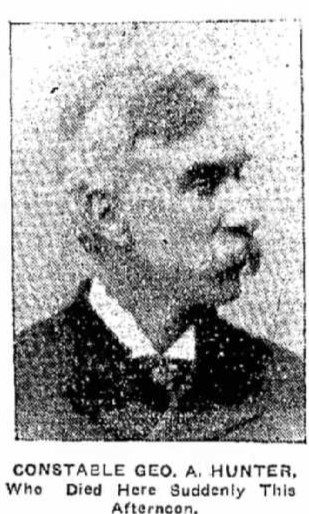
Living in Lebanon most of his life, George enjoyed many friendships. In early years he owned an ice business, the dam near Light's rolling mill being known as "Hunter's ice dam." The dam formed present-day Lion's Lake just north of Lebanon in Ebenezer.
In the early 1890s he made news several times selling about 100 tons of ice per day in the summertime to Mt Gretna Ice Company's ice house near Colebrook.
Later he was appointed as county detective by district attorney Frank Seltzer, serving for years before elected as constable in the Third Ward, which he held until death.
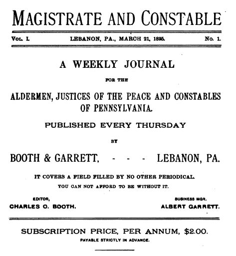
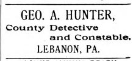
His obituary headlined him as "Terror to Crooks," and described his state-wide reputation as one of the most astute sleuths. His tall, muscular build made him an imposing figure when bearing down on his suspects.
Various news accounts report him dealing with crimes ranging from attempted murder, assault and battery; others involving chicken thieves, a horse thief ("soiled dove" named Lizzie Lebo — "well-known in police circles for public intoxication"), and once had to chase gypsies to recover stolen property.
Though a terror to thieves, the community enjoyed his genial disposition, good-natured and popular wherever he went.
Later in life he started a trucking business and served in the Union fire company. He had begun negotiations for a farm prior to his death. He died unexpectedly at his home at 166 North 10th Street, collapsing in March 1904.
Nancy Nebiker's contributions have been invaluable, helping add color to a story-in-progress on the Colemans of North Lebanon.
Cindy Schlegel and Joseph Morales, Friends of Coleman Memorial Park, for providing insights on the Guare home.
Margaret Hopkins, LebTown writer, for her timely story on Lebanon's ice dams, which added to the life of Constable Geo. A. Hunter.
Mike Trump, local historian, for locating Hunter's dam in Ebenezer.
Originally published on LebTown, January 29, 2025.